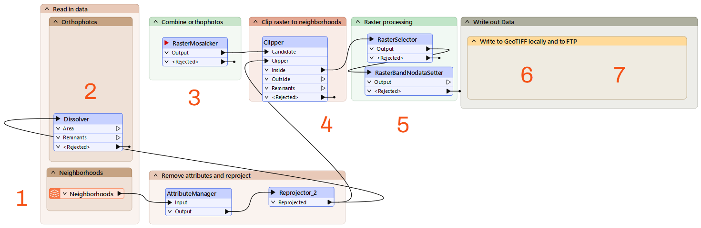
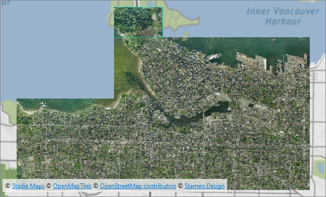
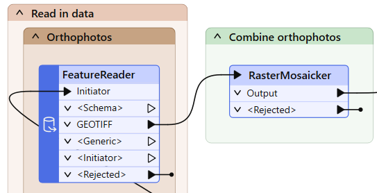
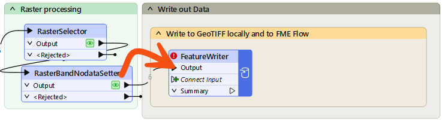
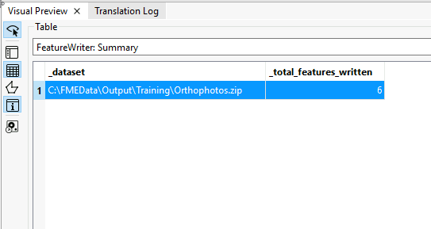
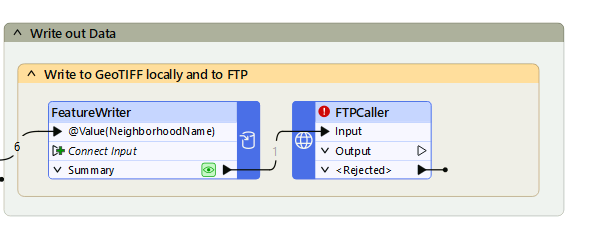
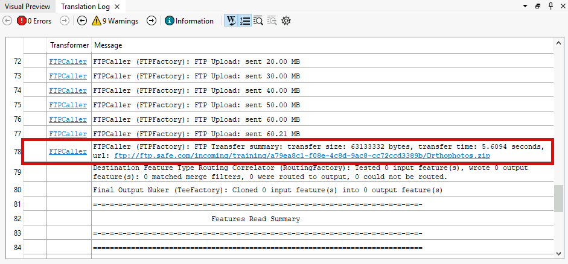

After completing this lesson, you’ll be able to:
In this exercise, we'll look at common use cases for the FeatureReader and FeatureWriter and use a web data transformer.
The scenario is that we have a folder full of orthophotos in GeoTIFF format. However, we want to extract the orthophotos as individual rasters covering the area of several downtown neighborhoods.
Open the starting workspace in FME Workbench (2024.1 or later).
This workspace is already mostly configured, but we must add a FeatureReader and FeatureWriter to accomplish this task. If you examine the workspace, you'll see the following:

Add a FeatureReader to the Orthophotos bookmark above the Dissolver. Connect the Dissolver's Area port to the FeatureReader Initiator port.
Double-click the FeatureReader to open its Parameters dialog. Configure it as follows:
| Format | GeoTIFF (Geo-referenced Tagged Image File Format) |
| Dataset |
Ideally, use local files: click the ellipsis button [. . .] and browse to C:\FMEData\Data\Orthophotos. Select all the files. Click Open. You should see all the files listed, delimited by a comma. This list instructs the FeatureReader to read all these files. Use the web version only as a backup: https://s3.amazonaws.com/FMEData/FMEData/Data/Orthophotos.zip |
| Spatial Filter | Initiator OGC-Intersects Result |
With this configuration, the FeatureReader will read the GeoTIFF files that overlap the neighborhoods of interest.
In this case, we want to read each photo intersecting any neighborhood and just read it once. That is why we used a Dissolver to get a single initiator feature. However, you can also use the FeatureReader in scenarios with multiple initiators. If we skipped the Dissolver in this case, we'd read some of the photos multiple times, as we would read intersecting photos for each neighborhood feature separately. Try that out - you'll need the number of features to answer a Quiz question below.
Click OK.
Use Run to This on the FeatureReader. Inspect the GEOTIFF output port to view the matching orthophotos. Take note of how many there are; you'll need it for the quiz. The results should look like this:

Map tiles © Stadia Maps, © OpenMapTiles, © OpenStreetMap contributors, © Stamen Design
Ensure the FeatureReader is properly configured by connecting its GEOTIFF output port to the RasterMosaicker input port:

Run the workspace to update the feature caches. Inspect the RasterBandNoDataSetter Output port. You should see the images from earlier, but now clipped to the neighborhood outlines and with transparent pixels for the NoData values.

Map tiles © Stadia Maps, © OpenMapTiles, © OpenStreetMap contributors, © Stamen Design
Note that raster images can take several seconds to appear in Visual Preview.
Add a FeatureWriter and connect the RasterBandNoDataSetter Output port to the Connect Input port:

It will turn into an Output port, the default name of the feature type it creates.
Double-click the FeatureWriter to open its Parameters. Configure them as follows:
| Format | GeoTIFF (Geo-referenced Tagged Image File Format) |
| Dataset | C:\FMEData\Output\Training\Orthophotos.zip |
| Feature Types > General > Raster File Name | Click the drop-down, Attribute Value > NeighborhoodName |
With this configuration, the FeatureWriter will use a feature-type fanout to create a separate GeoTIFF file for each neighborhood.
Click OK.
You'll see the port's name change again, this time to @Value(NeighbohoodName), reflecting the feature type fanout setting.
Run your workspace to write out the images. Click the FeatureWriter once to select it and click the Open Containing Folder button to see the written images:

Alternatively, you can try using a different Connector transformer with a web service you have access to, like a GoogleDriveConnector or DropboxConnector.
The FeatureWriter is working correctly to write the data, but now it's time to take advantage of being able to continue a workspace after writing. We can use a Connector or similar transformer to upload these files somewhere.
Click the Summary cache to inspect it. You should see an attribute called _dataset. The FeatureWriter created this attribute, which stores the path to the written data. You can use this path to find the files that FME recently wrote and do something with them; in this case, upload them to an FTP server.

Add an FTPCaller after the FeatureWriter and connect it to the Summary port.

Once you have a Web Connection configured, double-click the FTPCaller to open its parameters. Configure it as follows:
| URL | ftp://ftp.safe.com/incoming/training/@UUID()-Orthophotos.zip |
| Transfer Type | Upload from a File |
| File to Upload | _dataset |
| Authentication Type | None/Anonymous |
Click OK.
Run your workspace. In the log file, you will find the confirmation that FME uploaded the dataset to the FTP Server:

Here is the key advantage of the FeatureWriter: your workspace can continue after you write data.